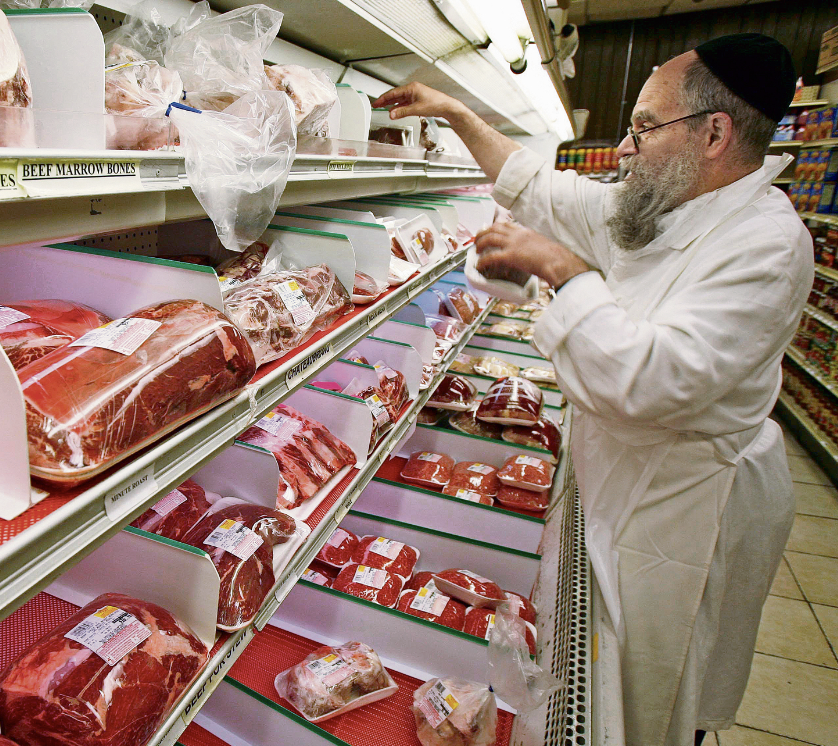
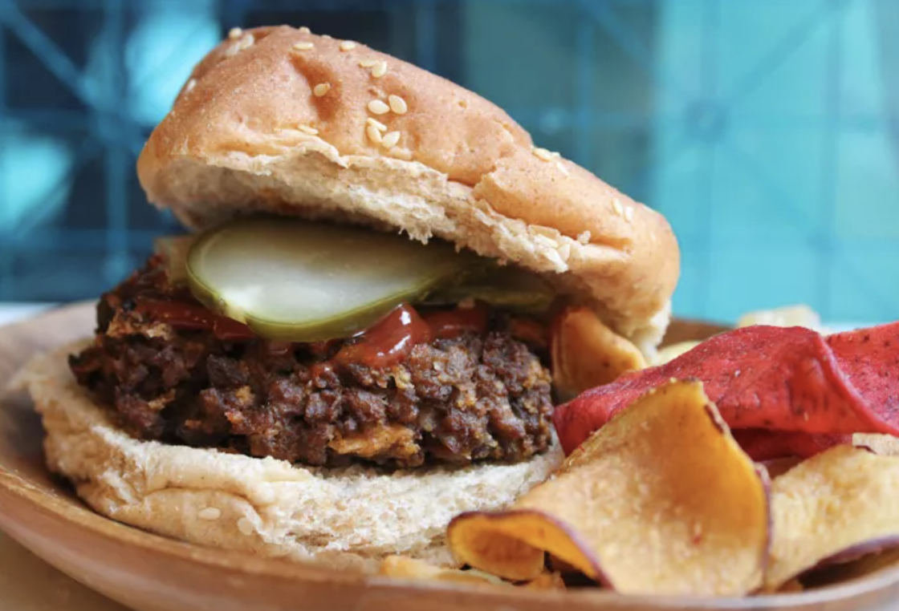
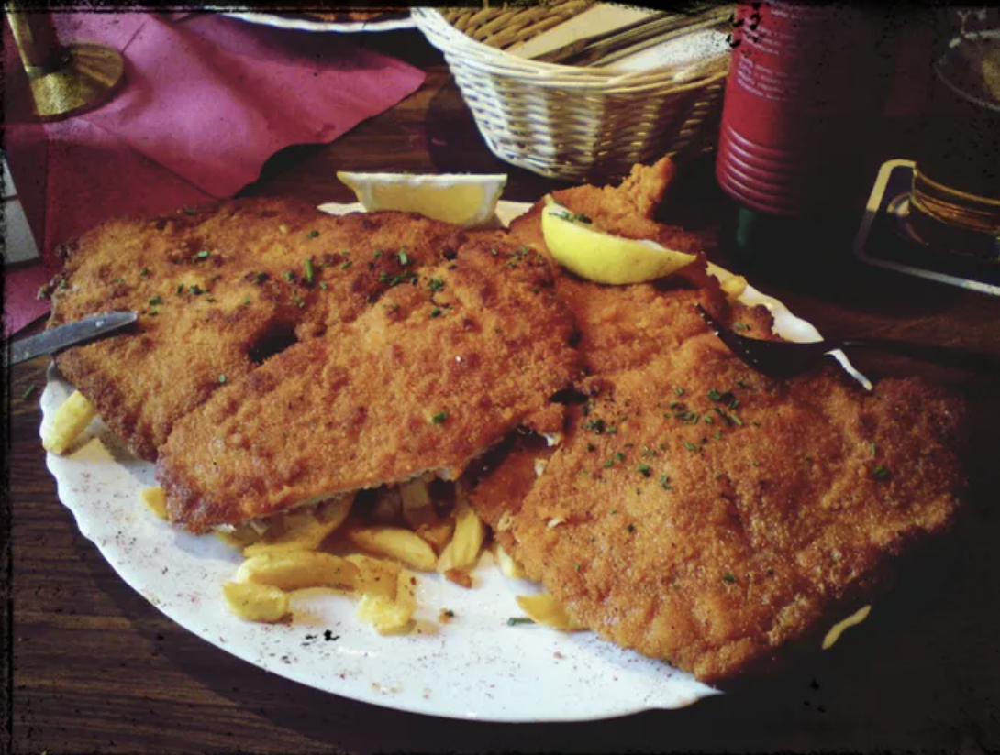

Kosher Meat

Kosher meat refers to meat that adheres to the dietary laws outlined in Jewish dietary regulations, known as kashrut. These guidelines dictate the proper methods of slaughter, processing, and preparation of meat to ensure it meets the religious requirements set forth in the Torah. In particular, kosher meat must come from animals that chew their cud and have split hooves, and they must be slaughtered by a trained and certified Jewish ritual slaughterer (shochet) in a humane and precise manner. Additionally, the meat must undergo a thorough process of salting and soaking to remove any remaining blood, a practice central to maintaining kosher dietary standards.
BusyInBrooklyn came out with a cookbook titled Millenial Kosher.

Hamburger
Schnitzel